Blood is a fascinating component of the human body. With only a few drops of blood, we can learn a lot about the conditions of our bodies.
However, blood test results are usually conveyed in a complex format that is not understandable by everyone.
A
study has shown that only one-third of people with low numeracy and literacy skills
were able to tell when the results of one blood element was not in the normal range while given a reference to standard ranges of that element.
Therefore, I built an interface that utilizes design concepts in visualizing blood test results to patients. My contributions in this tool are:
- Normalize blood test results for more simplification.
- Use polygons as a visual language to communicate the results better.
- Interactive interface that allows the patient to participate.
Problem
The format of blood test results is complex and not understandable by everyone. The example below is my personal blood data from
Patient Fusion.
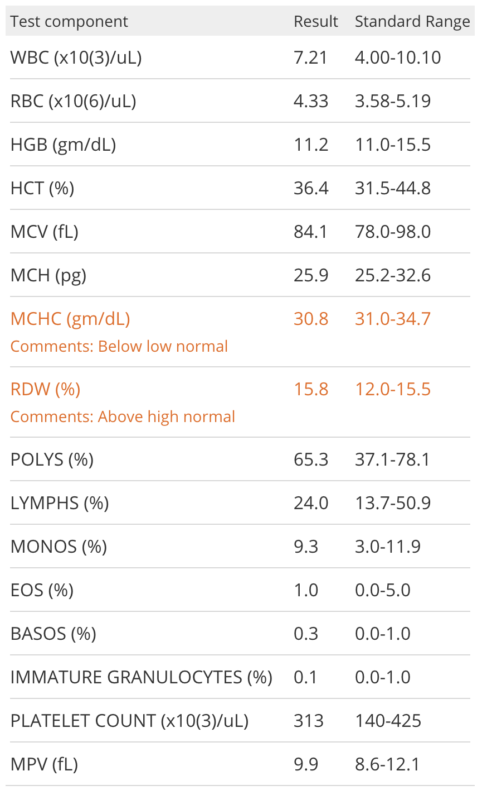
Process
I started with analyzing my blood results report. My first impression was that the the report was heavy texted,
it lacked visualizations, and it had different ranges and units that didn't help me understand my test results.
I decided to focus on four main blood components:
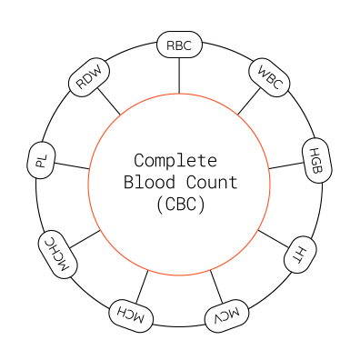
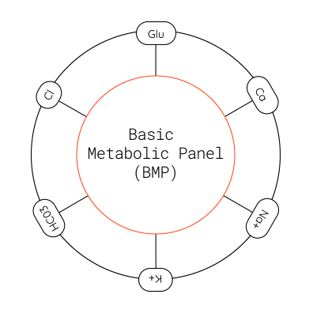
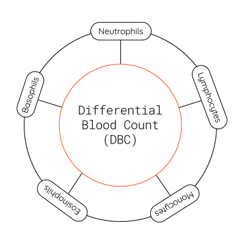
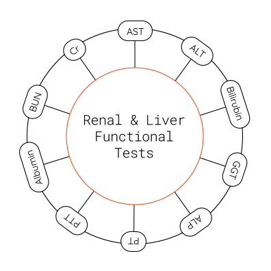
Datasets
Complete Blood Count
| Blood Component |
Min |
Max |
Unit |
| White Blood Cells |
4500 |
11,000 |
mm3 |
| Red Blood Cells |
4300000 |
5900000 |
mm3 |
| Hemoglobin |
13.5 |
17.5 |
g/dL |
| Hematocrit |
41 |
53 |
% |
| Mean Corpuscular Volume |
80 |
100 |
µm3 |
| Mean Corpuscular Hemoglobin |
25.4 |
34.6 |
pg/cell |
| Mean Corpuscular Hemoglobin Concentration |
31% |
36% |
Hb/cell |
| Platelets |
150,000 |
400,000 |
mm3 |
| Red Cell Distribution Width |
11.8 |
15.6 |
% |
Differential Blood Count
| Blood Component |
Min |
Max |
Unit |
| Neutrophils |
40 |
80 |
% |
| Lymphocytes |
20 |
40 |
% |
| Monocytes |
2 |
10 |
% |
| Eosinophils |
1 |
6 |
% |
| Basophils |
0.5 |
1 |
% |
Basic Metabolic Panel
| Blood Component |
Min |
Max |
Unit |
| Blood Glucose |
0 |
140 |
mg/dL |
| Calcium |
8.5 |
10.9 |
mg/dL |
| Sodium |
135 |
147 |
mmol/L |
| Potassium |
3.7 |
5.2 |
mEq/L |
| Bicarbonate |
23 |
30 |
mEq/L |
| Chloride |
98 |
106 |
mmol/L |
Renal & Liver Functional Tests
| Blood Component |
Min |
Max |
Unit |
| Blood Urea Nitrogen |
6 |
20 |
mg/dL |
| Serum Creatinine |
0.5 |
1.2 |
mg/dL |
| Aspartate Aminotransferase |
8 |
48 |
U/L |
| Alanine Aminotransferase |
7 |
55 |
U/L |
| Bilirubin |
0.1 |
1.2 |
mg/dL |
| Gamma-Glutamyl Transferase |
9 |
48 |
U/L |
| Alkaline Phosphatase |
45 |
115 |
U/L |
| Prothrombin Time |
9.5 |
13.8 |
sec |
| Partial thromboplastin Time |
60 |
70 |
sec |
| Albumin |
3.5 |
5 |
g/dL |
I like to hand-sketch my ideas before I create wireframes, so I sketched few ways to visualize blood test results
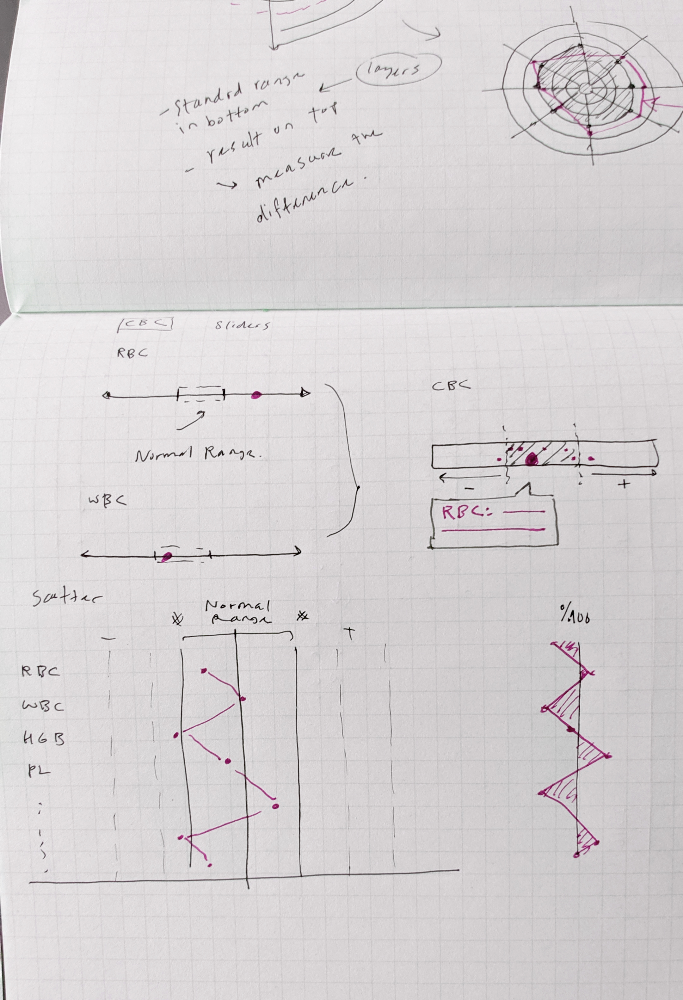
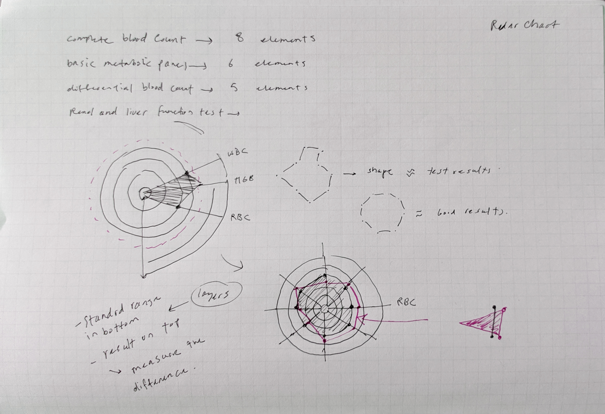
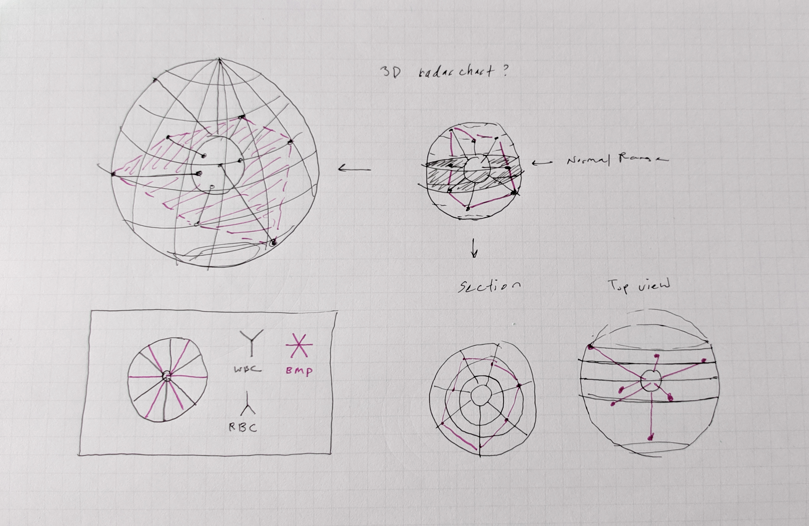
Wireframes
Wireframes were an important step in the process to study the structure of the interface. Below are few examples of
the first wireframes.
Hover to expand windows
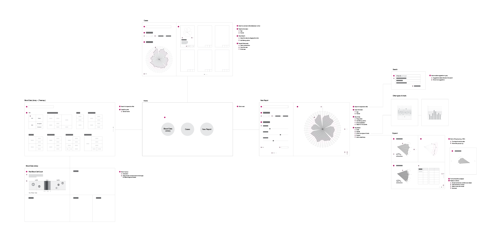
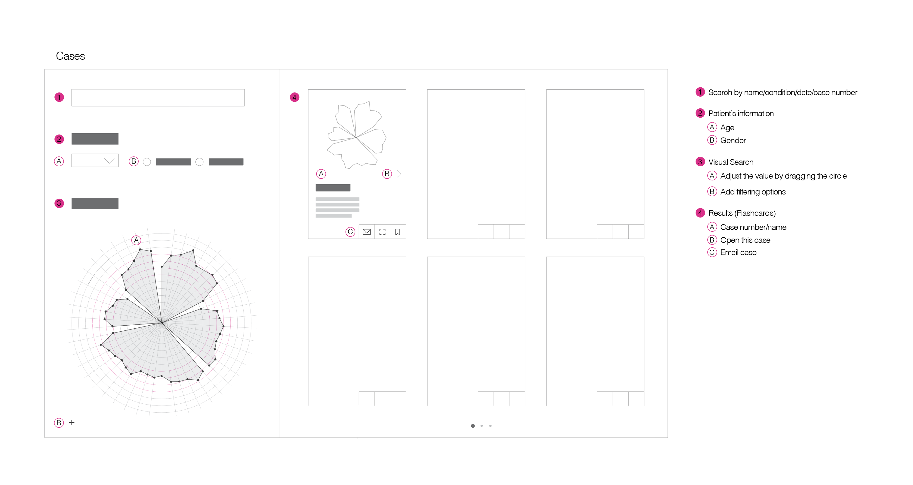
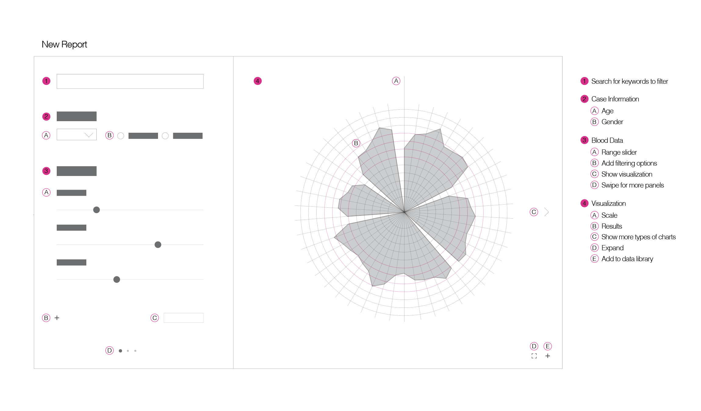
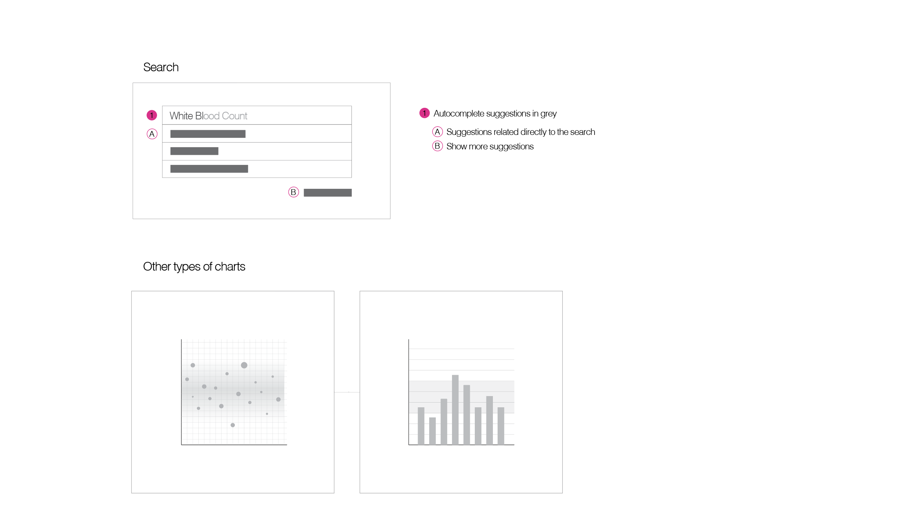
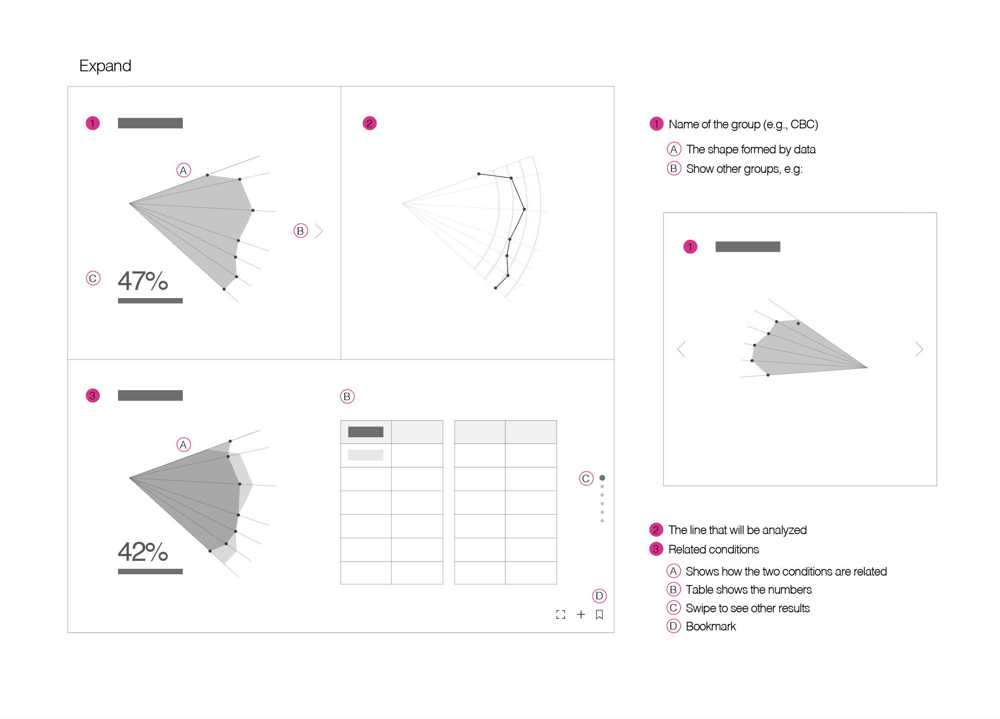
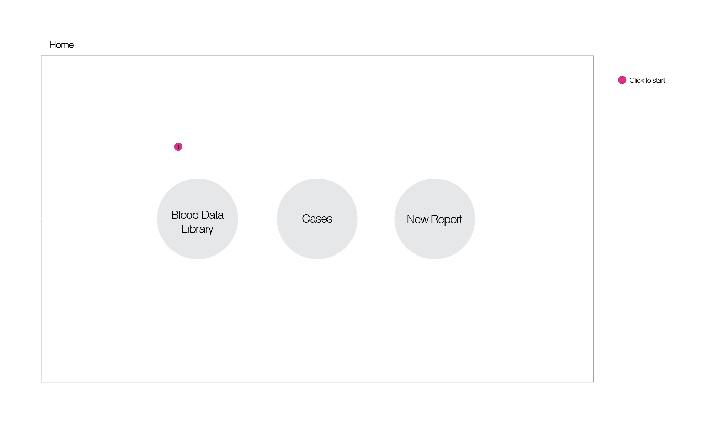
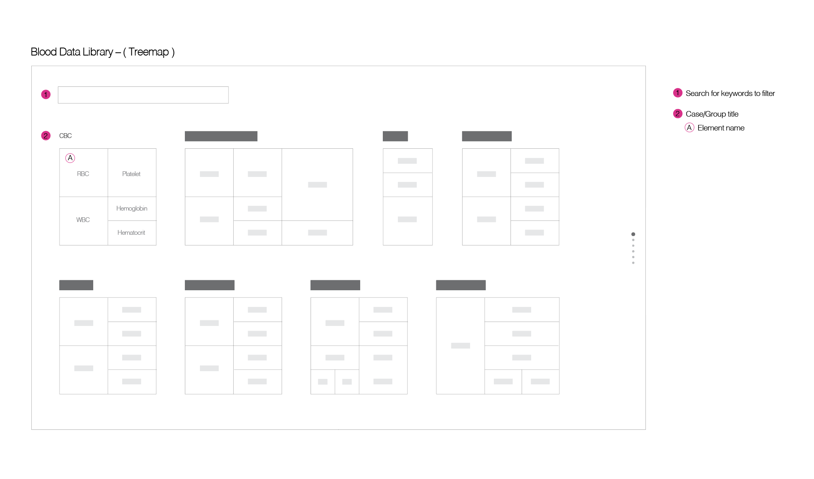
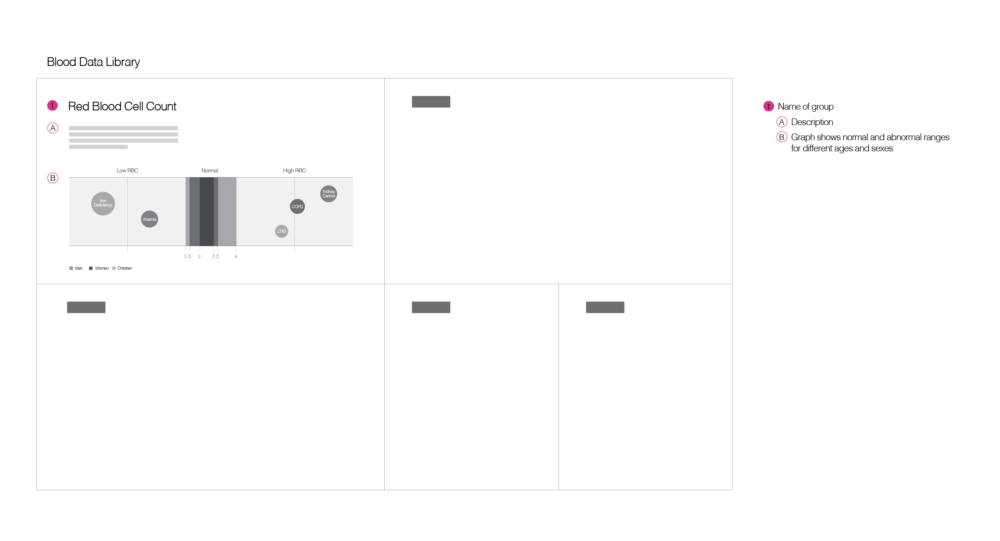
...